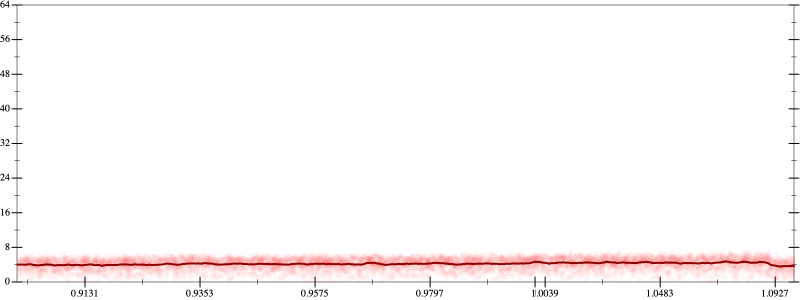
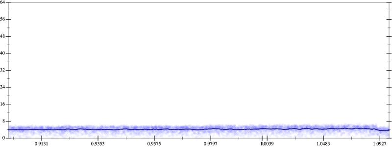
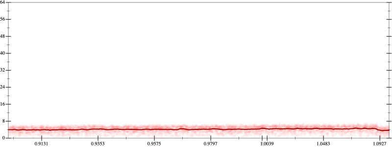
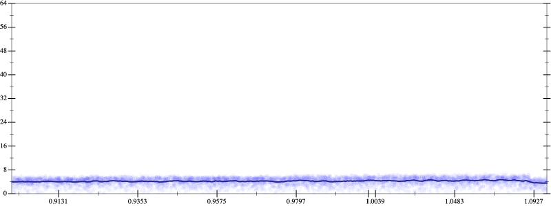

Initial program 4.2
\[\left(\left(\left(\left(\left(\left(\left(\left(1.0 + -10.0 \cdot x\right) + 22.5 \cdot \left(x \cdot x\right)\right) + -20.0 \cdot \left(\left(x \cdot x\right) \cdot x\right)\right) + 8.75 \cdot \left(\left(\left(x \cdot x\right) \cdot x\right) \cdot x\right)\right) + -2.1 \cdot \left(\left(\left(\left(x \cdot x\right) \cdot x\right) \cdot x\right) \cdot x\right)\right) + 0.291667 \cdot \left(\left(\left(\left(\left(x \cdot x\right) \cdot x\right) \cdot x\right) \cdot x\right) \cdot x\right)\right) + -0.02381 \cdot \left(\left(\left(\left(\left(\left(x \cdot x\right) \cdot x\right) \cdot x\right) \cdot x\right) \cdot x\right) \cdot x\right)\right) + 0.001116 \cdot \left(\left(\left(\left(\left(\left(\left(x \cdot x\right) \cdot x\right) \cdot x\right) \cdot x\right) \cdot x\right) \cdot x\right) \cdot x\right)\right) + -2.8 \cdot 10^{-05} \cdot \left(\left(\left(\left(\left(\left(\left(\left(x \cdot x\right) \cdot x\right) \cdot x\right) \cdot x\right) \cdot x\right) \cdot x\right) \cdot x\right) \cdot x\right)\]
- Using strategy
rm Applied flip3-+4.2
\[\leadsto \left(\left(\left(\left(\color{blue}{\frac{{\left(\left(\left(1.0 + -10.0 \cdot x\right) + 22.5 \cdot \left(x \cdot x\right)\right) + -20.0 \cdot \left(\left(x \cdot x\right) \cdot x\right)\right)}^{3} + {\left(8.75 \cdot \left(\left(\left(x \cdot x\right) \cdot x\right) \cdot x\right)\right)}^{3}}{\left(\left(\left(1.0 + -10.0 \cdot x\right) + 22.5 \cdot \left(x \cdot x\right)\right) + -20.0 \cdot \left(\left(x \cdot x\right) \cdot x\right)\right) \cdot \left(\left(\left(1.0 + -10.0 \cdot x\right) + 22.5 \cdot \left(x \cdot x\right)\right) + -20.0 \cdot \left(\left(x \cdot x\right) \cdot x\right)\right) + \left(\left(8.75 \cdot \left(\left(\left(x \cdot x\right) \cdot x\right) \cdot x\right)\right) \cdot \left(8.75 \cdot \left(\left(\left(x \cdot x\right) \cdot x\right) \cdot x\right)\right) - \left(\left(\left(1.0 + -10.0 \cdot x\right) + 22.5 \cdot \left(x \cdot x\right)\right) + -20.0 \cdot \left(\left(x \cdot x\right) \cdot x\right)\right) \cdot \left(8.75 \cdot \left(\left(\left(x \cdot x\right) \cdot x\right) \cdot x\right)\right)\right)}} + -2.1 \cdot \left(\left(\left(\left(x \cdot x\right) \cdot x\right) \cdot x\right) \cdot x\right)\right) + 0.291667 \cdot \left(\left(\left(\left(\left(x \cdot x\right) \cdot x\right) \cdot x\right) \cdot x\right) \cdot x\right)\right) + -0.02381 \cdot \left(\left(\left(\left(\left(\left(x \cdot x\right) \cdot x\right) \cdot x\right) \cdot x\right) \cdot x\right) \cdot x\right)\right) + 0.001116 \cdot \left(\left(\left(\left(\left(\left(\left(x \cdot x\right) \cdot x\right) \cdot x\right) \cdot x\right) \cdot x\right) \cdot x\right) \cdot x\right)\right) + -2.8 \cdot 10^{-05} \cdot \left(\left(\left(\left(\left(\left(\left(\left(x \cdot x\right) \cdot x\right) \cdot x\right) \cdot x\right) \cdot x\right) \cdot x\right) \cdot x\right) \cdot x\right)\]
Applied simplify4.2
\[\leadsto \left(\left(\left(\left(\frac{\color{blue}{{\left(\left(8.75 \cdot x\right) \cdot {x}^{3}\right)}^{3} + {\left(\left(x \cdot x\right) \cdot \left(-20.0 \cdot x + 22.5\right) + \left(x \cdot -10.0 + 1.0\right)\right)}^{3}}}{\left(\left(\left(1.0 + -10.0 \cdot x\right) + 22.5 \cdot \left(x \cdot x\right)\right) + -20.0 \cdot \left(\left(x \cdot x\right) \cdot x\right)\right) \cdot \left(\left(\left(1.0 + -10.0 \cdot x\right) + 22.5 \cdot \left(x \cdot x\right)\right) + -20.0 \cdot \left(\left(x \cdot x\right) \cdot x\right)\right) + \left(\left(8.75 \cdot \left(\left(\left(x \cdot x\right) \cdot x\right) \cdot x\right)\right) \cdot \left(8.75 \cdot \left(\left(\left(x \cdot x\right) \cdot x\right) \cdot x\right)\right) - \left(\left(\left(1.0 + -10.0 \cdot x\right) + 22.5 \cdot \left(x \cdot x\right)\right) + -20.0 \cdot \left(\left(x \cdot x\right) \cdot x\right)\right) \cdot \left(8.75 \cdot \left(\left(\left(x \cdot x\right) \cdot x\right) \cdot x\right)\right)\right)} + -2.1 \cdot \left(\left(\left(\left(x \cdot x\right) \cdot x\right) \cdot x\right) \cdot x\right)\right) + 0.291667 \cdot \left(\left(\left(\left(\left(x \cdot x\right) \cdot x\right) \cdot x\right) \cdot x\right) \cdot x\right)\right) + -0.02381 \cdot \left(\left(\left(\left(\left(\left(x \cdot x\right) \cdot x\right) \cdot x\right) \cdot x\right) \cdot x\right) \cdot x\right)\right) + 0.001116 \cdot \left(\left(\left(\left(\left(\left(\left(x \cdot x\right) \cdot x\right) \cdot x\right) \cdot x\right) \cdot x\right) \cdot x\right) \cdot x\right)\right) + -2.8 \cdot 10^{-05} \cdot \left(\left(\left(\left(\left(\left(\left(\left(x \cdot x\right) \cdot x\right) \cdot x\right) \cdot x\right) \cdot x\right) \cdot x\right) \cdot x\right) \cdot x\right)\]
Applied simplify4.2
\[\leadsto \left(\left(\left(\left(\frac{{\left(\left(8.75 \cdot x\right) \cdot {x}^{3}\right)}^{3} + {\left(\left(x \cdot x\right) \cdot \left(-20.0 \cdot x + 22.5\right) + \left(x \cdot -10.0 + 1.0\right)\right)}^{3}}{\color{blue}{\left(\left(x \cdot x\right) \cdot \left(22.5 + -20.0 \cdot x\right) + \left(x \cdot -10.0 + 1.0\right)\right) \cdot \left(\left(x \cdot x\right) \cdot \left(22.5 + -20.0 \cdot x\right) + \left(x \cdot -10.0 + 1.0\right)\right) + \left({x}^{3} \cdot \left(8.75 \cdot x - -20.0\right) - \left(x \cdot \left(x \cdot 22.5\right) + \left(x \cdot -10.0 + 1.0\right)\right)\right) \cdot \left({x}^{3} \cdot \left(8.75 \cdot x\right)\right)}} + -2.1 \cdot \left(\left(\left(\left(x \cdot x\right) \cdot x\right) \cdot x\right) \cdot x\right)\right) + 0.291667 \cdot \left(\left(\left(\left(\left(x \cdot x\right) \cdot x\right) \cdot x\right) \cdot x\right) \cdot x\right)\right) + -0.02381 \cdot \left(\left(\left(\left(\left(\left(x \cdot x\right) \cdot x\right) \cdot x\right) \cdot x\right) \cdot x\right) \cdot x\right)\right) + 0.001116 \cdot \left(\left(\left(\left(\left(\left(\left(x \cdot x\right) \cdot x\right) \cdot x\right) \cdot x\right) \cdot x\right) \cdot x\right) \cdot x\right)\right) + -2.8 \cdot 10^{-05} \cdot \left(\left(\left(\left(\left(\left(\left(\left(x \cdot x\right) \cdot x\right) \cdot x\right) \cdot x\right) \cdot x\right) \cdot x\right) \cdot x\right) \cdot x\right)\]
- Using strategy
rm Applied add-sqr-sqrt4.2
\[\leadsto \left(\left(\left(\left(\frac{{\left(\left(8.75 \cdot x\right) \cdot {x}^{3}\right)}^{3} + {\left(\left(x \cdot x\right) \cdot \left(-20.0 \cdot x + 22.5\right) + \left(x \cdot -10.0 + 1.0\right)\right)}^{3}}{\left(\left(x \cdot x\right) \cdot \left(22.5 + -20.0 \cdot x\right) + \left(x \cdot -10.0 + 1.0\right)\right) \cdot \left(\left(x \cdot x\right) \cdot \color{blue}{\left(\sqrt{22.5 + -20.0 \cdot x} \cdot \sqrt{22.5 + -20.0 \cdot x}\right)} + \left(x \cdot -10.0 + 1.0\right)\right) + \left({x}^{3} \cdot \left(8.75 \cdot x - -20.0\right) - \left(x \cdot \left(x \cdot 22.5\right) + \left(x \cdot -10.0 + 1.0\right)\right)\right) \cdot \left({x}^{3} \cdot \left(8.75 \cdot x\right)\right)} + -2.1 \cdot \left(\left(\left(\left(x \cdot x\right) \cdot x\right) \cdot x\right) \cdot x\right)\right) + 0.291667 \cdot \left(\left(\left(\left(\left(x \cdot x\right) \cdot x\right) \cdot x\right) \cdot x\right) \cdot x\right)\right) + -0.02381 \cdot \left(\left(\left(\left(\left(\left(x \cdot x\right) \cdot x\right) \cdot x\right) \cdot x\right) \cdot x\right) \cdot x\right)\right) + 0.001116 \cdot \left(\left(\left(\left(\left(\left(\left(x \cdot x\right) \cdot x\right) \cdot x\right) \cdot x\right) \cdot x\right) \cdot x\right) \cdot x\right)\right) + -2.8 \cdot 10^{-05} \cdot \left(\left(\left(\left(\left(\left(\left(\left(x \cdot x\right) \cdot x\right) \cdot x\right) \cdot x\right) \cdot x\right) \cdot x\right) \cdot x\right) \cdot x\right)\]
 
